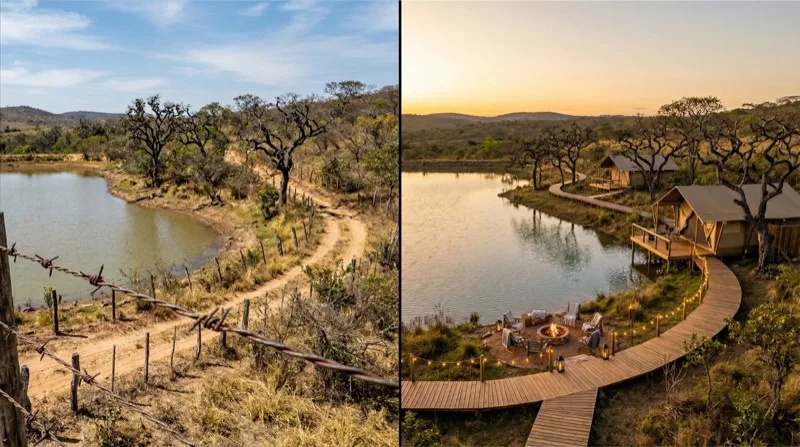

Para avaliar o potencial turístico de uma área,
primeiro descubra o seu perfil.

Proprietário, investidor ou consultor — cada um tem um ponto de partida diferente. Em 2 minutos descubra o seu e o que fazer a seguir.
Qual é a sua relação com a área que quer avaliar?
Você está no lugar certo
Responda mais algumas perguntas para entendermos o seu caso.
Quais atrativos naturais você já identifica na sua área?(selecione todos que se aplicam)
Como está a situação da área hoje?
O que mais te trava de avançar com o ecoturismo?(selecione todos que se aplicam)
O que você quer que a área represente para você?
Como você imagina a área em 12 meses?
Que tipo de área você está buscando?(selecione todos que se aplicam)
Qual é o seu prazo para tomar essa decisão?
Qual é o seu maior medo ao investir em uma área?
Que tipo de ecoturismo você quer oferecer?(selecione todos que se aplicam)
O que é mais importante para você nessa decisão?
Com que tipo de área você trabalha?(selecione todos que se aplicam)
Como você faz diagnósticos de áreas hoje?
O que seus clientes mais precisam que você ainda não entrega?
O que mais trava o crescimento do seu serviço?
Como você quer se posicionar nos próximos 12 meses?
O que te trouxe até aqui?
O que mais te atrai no ecoturismo?
O que mais te impede de dar o próximo passo?
Como você se imagina no ecoturismo daqui a 2 anos?
O instrumento que os
Parques Nacionais usam

O IAT (Índice de Atratividade Turística) foi desenvolvido para parques nacionais brasileiros e já foi aplicado no Parque Nacional do Iguaçu, em Brasília e na Floresta Nacional de São Francisco de Paula.
Agora está disponível para qualquer área natural — e gera um relatório técnico em 30 minutos.
O que o método já fez por quem apostou nele
"O método trouxe uma visão do todo e das particularidades que a gente não consegue enxergar. Já conseguimos direcionar melhor nosso público e criar continuidade de receita."
"Fizemos o IAT e aplicamos as ferramentas de verdade. Saímos com um documento concreto em mãos. Isso é extremamente estimulante."
"Totalmente virou nossa chave, encheu a gente de esperança. O que você está fazendo é nos guiar pelo caminho que você já passou e provou que dá certo."
Perfil identificado!
Identificado com base nas suas respostas
✦ O que fazer primeiro no seu caso
✦ Como a Calculadora IAT se aplica à sua situação
Preencha seus dados para receber o diagnóstico completo.
Seu diagnóstico está pronto!
Preencha abaixo para receber seu resultado personalizado com diagnóstico e próximos passos concretos.
🔒 Seus dados estão protegidos. Não enviamos spam.
Preparando seu diagnóstico personalizado…
📍 Diagnóstico
O que você recebe
Por que funciona
Quem já usou
"Saímos com um documento concreto em mãos. Isso é extremamente estimulante."
"Já conseguimos direcionar melhor nosso público e criar continuidade de receita."
Se por qualquer motivo você não ficar satisfeito nos primeiros 7 dias, devolvemos 100% do seu dinheiro. Sem burocracia, sem perguntas.
Dúvidas frequentes
De R$297 por apenas R$49 — acesso imediato